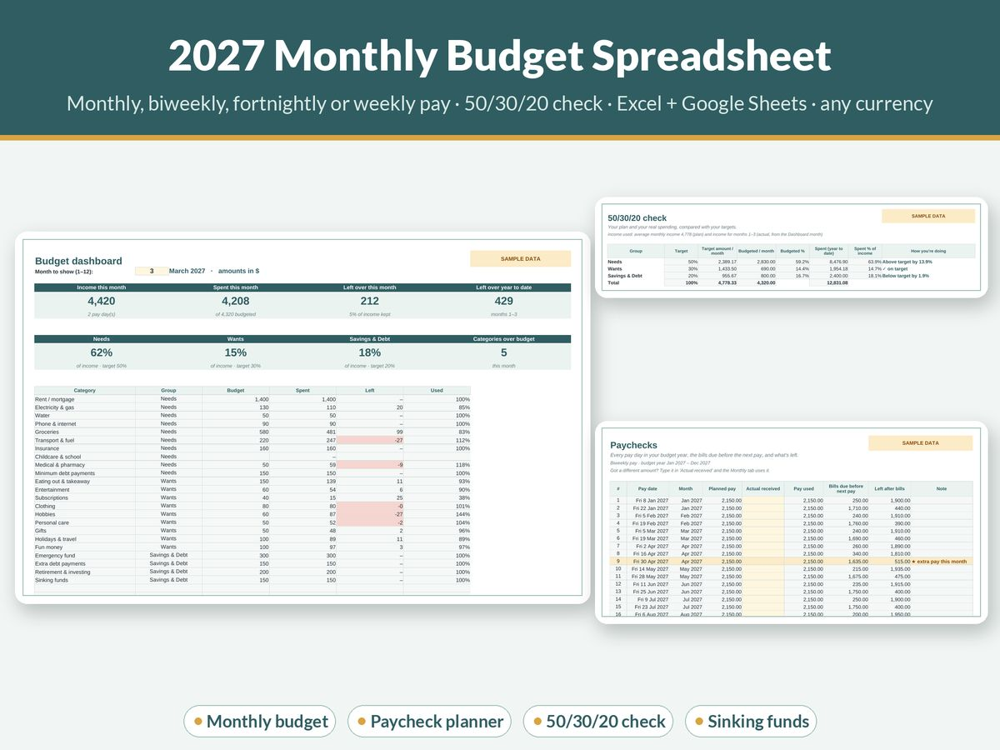

How to Set Up a 2027 Budget in 15 Minutes

A budget doesn't need a weekend, a finance degree or a colour-coded binder. A good first version takes about 15 minutes, and a rough budget you actually use beats a perfect one you never finish.
Here's a simple way to set up your 2027 budget, timed in five short steps. Grab your last two or three bank statements (or your banking app) and a timer.
Minutes 0–3: write down your real monthly income
Use what actually lands in your account after tax, not your salary before deductions.
- Paid monthly: use your usual take-home amount.
- Paid twice a month: add the two pays together.
- Paid biweekly or fortnightly: multiply one pay by 26 and divide by 12. That gives a fair monthly figure, and the two "extra" pay months each year become a bonus.
- Paid weekly: multiply one pay by 52 and divide by 12.
- Irregular income: use your lowest normal month from the last year. Our guide to budgeting on an irregular income covers this in more detail.
Example: a fortnightly take-home pay of 1,600 × 26 ÷ 12 = 3,467 a month.
Minutes 3–7: list your fixed bills ("needs")
Scroll through a month of statements and write down everything you must pay: rent or mortgage, power, water, phone, internet, insurance, minimum debt payments, transport and a realistic grocery amount. Don't aim for perfect. Round up.
Then add any yearly or irregular costs, divided by 12. Car registration, annual subscriptions, birthdays and Christmas all belong here. These are the costs that usually break a budget, and setting a little aside each month (a sinking fund) stops them doing that. See sinking funds explained if that's new to you.
Minutes 7–10: use the 50/30/20 rule as a starting point
The 50/30/20 budget is a simple way to split your take-home pay:
| Share | Goes to | On 3,467 a month |
|---|---|---|
| 50% | Needs: bills, groceries, transport, minimum debt payments | 1,733 |
| 30% | Wants: eating out, hobbies, streaming, treats | 1,040 |
| 20% | Savings and extra debt payments | 693 |
It's a guideline, not a rule. If your rent alone takes 40% of your pay, your "needs" might be 65% for now, and that's fine. The point is to see where your money goes and choose the split on purpose. Compare your needs total from step 2 with the 50% line: that one number tells you more than most budgeting apps will.
Minutes 10–13: set one savings goal for 2027
Pick one goal and give it a number and a date. For example: "a 1,000 emergency buffer by June", or "pay off the credit card by September". Divide the amount by the number of months (or pay days) and that's your monthly savings line.
If you'd like something more fun than a plain transfer, a savings challenge such as the 100 envelope challenge gives you a small, visible win every week.
Minutes 13–15: pick a check-in day
The budget works when you look at it. Choose one short check-in each week (Sunday evening works for a lot of people) and one slightly longer review at the end of each month. Put both in your calendar now.
At each check-in, ask three questions:
- What did I spend since last time?
- Am I on track for my needs, wants and savings lines?
- Is anything big coming up next month?
Make it easier with a spreadsheet
You can do all of this on paper. A spreadsheet just does the adding up for you. Our 2027 Monthly Budget Spreadsheet on Etsy was built for exactly this 15-minute setup: pick your pay frequency (weekly, biweekly, fortnightly, twice-monthly or monthly), type in your income and bills, and it shows a 50/30/20 check, a paycheck-by-paycheck bills planner, sinking funds and a 12-month tracker on one dashboard. It works in Excel and Google Sheets, in any currency.
If you want the budget, a savings challenge and a habit tracker together, the 2027 Money Reset Bundle has all three.
The short version
- Write down your monthly take-home pay (convert weekly or fortnightly pay).
- List your fixed bills, plus yearly costs divided by 12.
- Compare your split with 50/30/20 and adjust on purpose.
- Set one savings goal with a number and a date.
- Book a weekly check-in and a monthly review.
This guide is general information, not financial advice. The figures in the examples are illustrative.

Get the free 2027 Money Reset Starter
A one-page budget starter and a 12-week mini savings challenge, for Excel, Google Sheets or print. Free: just type 0 at checkout.
You'll also get a few short, useful emails from JulesSheets (tips and the odd offer). Unsubscribe with one click, any time. Privacy.
More guides
- The 100 Envelope Challenge: How It Works and a Free Tracker Plan
- A Simple Budget Template for Beginners (and How to Fill It In)
- How to Budget on an Irregular Income (A Step-by-Step Method)
- Zero-Based Budgeting Step by Step: Give Every Dollar a Job
- Sinking Funds Explained: How to Stop Big Bills Wrecking Your Budget
- How to Budget on a Low Income: A Practical, Judgement-Free Guide
- Debt Snowball vs Avalanche: Which Is Better? (With a Worked Example)
- Small Business Bookkeeping for Beginners: A Simple System for Freelancers and Sole Traders
- Wedding Budget Breakdown by Category: A Practical Starting Split
- How Much Does a Baby Cost in the First Year? How to Estimate and Plan for It
- How Much to Spend on Christmas per Child (and How to Set a Christmas Budget)
- How to Set Up a 2027 Planner You'll Actually Use
- How to Write a Resume With No Experience (With Examples)